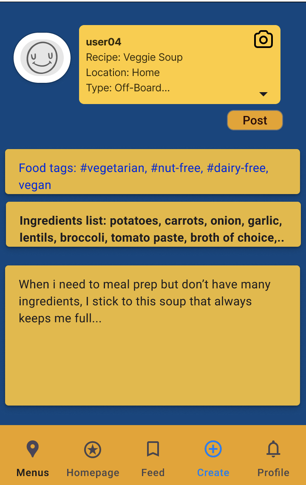

Below are screenshots of my mid-fidelity prototype, showing the main interface and essential features:
Login or Guest Page: Login screen with username and password fields or a guest
option.
Homepage: Welcoming homepage with a navigation menu and search bar.
Including the renaming of the Review Page to now Feed.
Profile: A redesigned Profile page showing user details and potential saved
recipes, reviews, and feedback forms.
Feed: An interactive feed for users to share recipes, reviews, like posts, and add
friends.
Expanded Review Example: An example of expanding a review from the Feed page. Users
can see see the star rating of the meal, metrics of numerical ratings, highlighted food tags, a user's text
describing the meal, and a heart icon to like the post.
Expanded Recipe Example: An example of expanding a recipe post from the Feed page. Users
can see see the star rating of the meal, highlighted food tags, text describing the recipe making process,
and a heart icon to like the post.
Create Button: When the create button in the upper right corner is pressed, the background
blurs while the icon turns blue. Three dropdown buttons are shown; Review, Recipe, and Feedback.
Create Review Button: When users click the Review button, the option changes color to white showing it
has been selected before transporting to a page for making a review.
Create Recipe Button: When users click the Recipe button, the option changes color to white showing it
has been selected before transporting to a page for making a recipe.
Create Review Page: Users who have selected the Review button will see a their profile picture and name in a text
box prompting for a subject name, location details (exampele: was the meal at a dining hall or elsewhere), and their meal plan type. There is then
a slider scale of 1 to 10 for three metrics to rate the meal. There is a food hashtag section showing examples with blue highlighted
text. And then a user input box to insert any more details if wanted and a star rating choice. There is a post button
and a camera icon to take a photo of the meal.
Create Review Post Button: When the Post button is selected users are shown the dropwdown buttons; friends, public, and
anonymous. Public sends the review to the Feed Page. Anonymous sends the review to the Feed Page without public username details. Friends changes the
vsibiity of the review to the friends the user has added.

Create Recipe Page Users who have selected the Recipe button will see a their profile picture and name in a text
box prompting for a subject name, location details (example: was the meal made on a campus kitchen, home, or elsewhere), and their meal plan type.
There is a post button and a camera icon to take a photo of the meal. There is a food hashtag section showing examples with
blue highlighted text. There is an ingrediants section under the food tags so users can view an ingrediants list. Lastly, the user input text
section for the user to detail how to create the recipe.
Create Recipe Post Button: When the Post button is selected users are shown the dropwdown buttons; friends, public, and
anonymous. Public sends the recipe to the Feed Page. Anonymous sends the review to the Feed Page without public username details. Friends changes the
vsibiity of the recipe to the friends the user has added.
Menu Page Menu screen showing all campus dining areas each with a collapsible
caret icon. Star ratings accumalted from reviews are avaiable, as well as more details of the dining hall.
There is a menu button to see the chosen dining hall's menu, a button to see other reviews of the selected dining hall,
and a feedback button to view the feedback form.
Feedback Form A new feedback form, so users can contact admin or Bon App staff about concerns ranging
from cross-contamination issues, recommendations, or any general feedback
Icons are sourced from the Figma Library and FigJam tutorial. Imagery of
Carleton's campus photo and logo are not owned by me. ฅ՞•ﻌ•՞ฅ